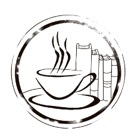

Nosotros

En este apartado se encotrara la filosofia empresarial de Lec-On Coffe

°Desempeñar los valores de la empresa.
°Ejecutar la misión y visión de la empresa.
°Cumplir con los horarios establecidos por la empresa, según el contrato, a la
tercera falta será causa de despido.
°Tener buena atención con el cliente, manteniendo los valores y ética.
°Contribuir con las innovaciones de la empresa.
°Presentarse sobrio a el trabajo, en caso de llegar alcoholizado se le dará dos
oportunidades y a la tercera se despide.
°Tener independencia emocional, asegurando el profesionalismo.
°Brindar un curso de capacitación obligatorio a todo nuevo ingreso a la
organización.
°Mantener el equilibrio ecológico a través de actividades y gestiones dentro y
fuera del establecimiento. ( Uso de residuos, uso adecuado de material y utensilios
biodegradable)
°Se brindará seguridad al personal y al cliente por medio de cámaras para
garantizar el cuidado de pertenencias.


©2023 por Lec-On Coffe